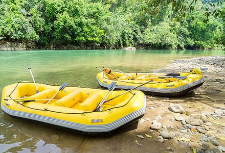
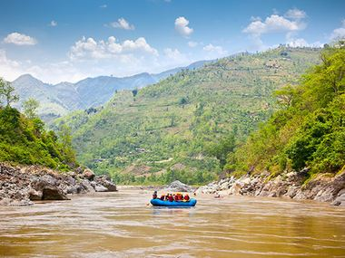
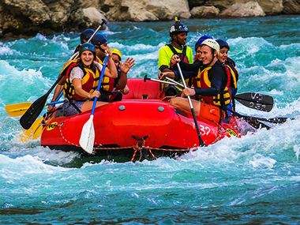
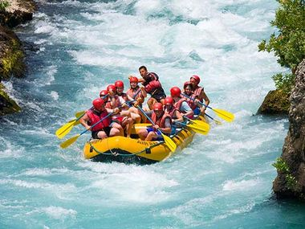
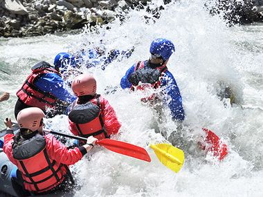
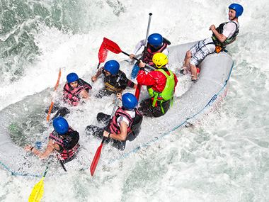

We help families, friends, and first-time paddlers feel at home on the river. Our guides teach the basics, help the crew paddle together, and make every trip an adventure worth sharing.

We help families, friends, and first-time paddlers feel at home on the river. Our guides teach the basics, help the crew paddle together, and make every trip an adventure worth sharing.
Down the River Rafting began when two local guides started taking neighbors out on their favorite stretch of river. They spent their weekends showing friends how to steer a raft and paddle together.

Those weekend trips grew into a small rafting company. Today, our guides still start each outing with a short paddling lesson so first-time rafters can find their rhythm before reaching the rapids.




